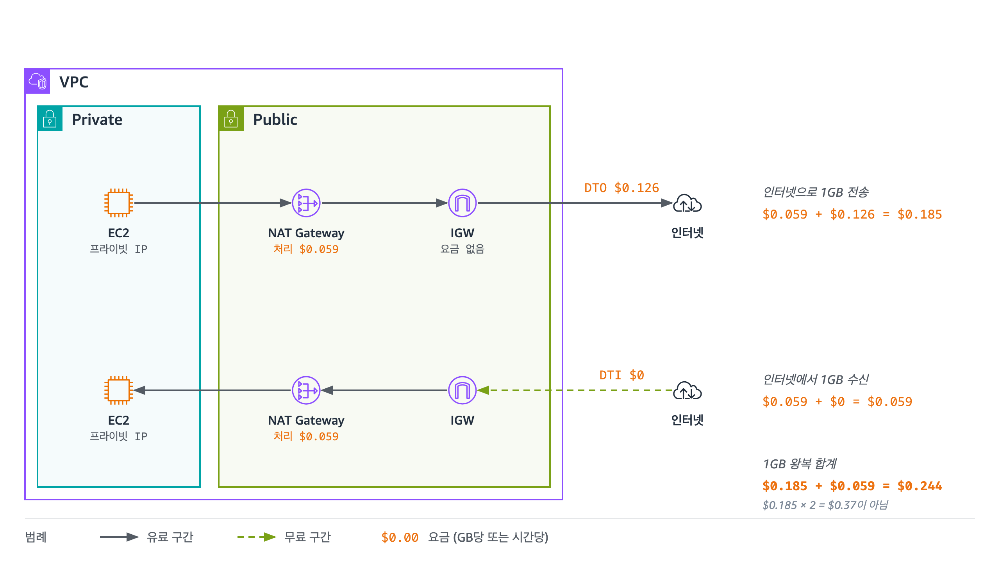
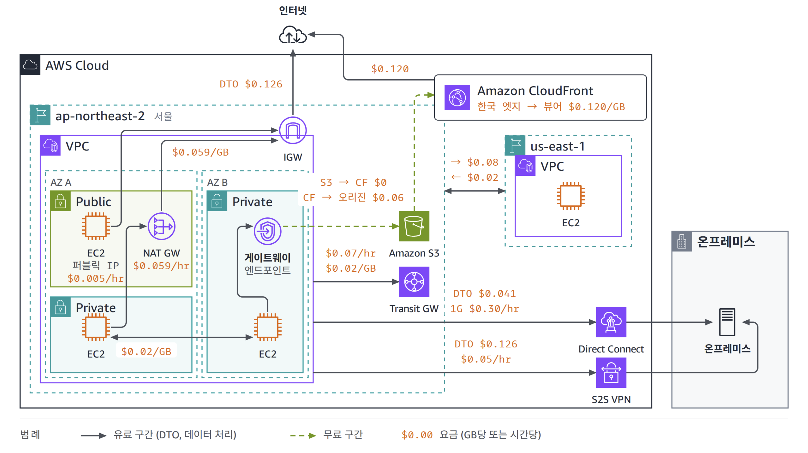
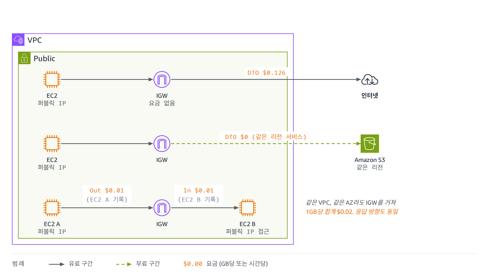
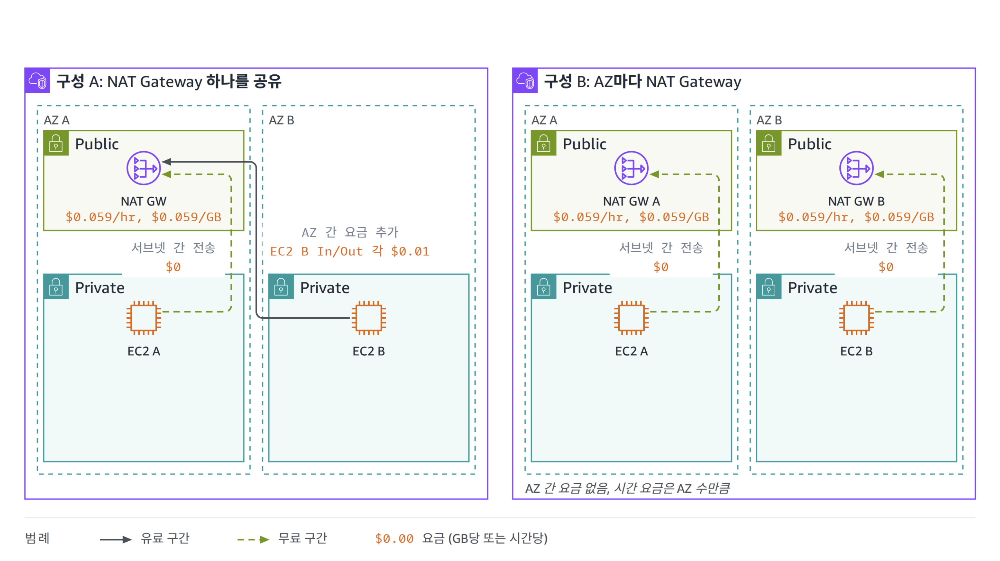
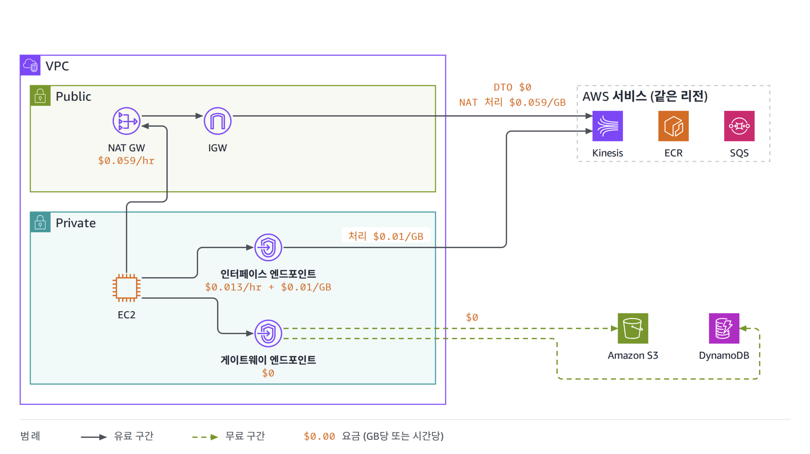

AWS 네트워크 비용이 어느 경로에서 어떤 단위로 발생하고 설계 단계에서 어떻게 줄이는지를 다룹니다. 비용은 방향과 경계로 정해지는 데이터 전송 요금과 트래픽이 지나는 관리형 서비스가 부과하는 데이터 처리 요금 두 가지로 정해지며 같은 트래픽에 함께 과금될 수 있습니다. 같은 리전 안의 통신은 프라이빗 IP로 하고 AWS 서비스로 향하는 트래픽은 VPC 엔드포인트로 우회해 NAT Gateway 처리 요금을 없애거나 6분의 1로 줄입니다.This post asks on which paths and in what units AWS networking costs are incurred, and how to reduce them at the design stage. The cost is determined by two charges that can apply to the same traffic: a data transfer charge set by direction and boundary, and a data processing charge applied by the managed services the traffic passes through. The conclusion is to communicate over private IPs within a Region and to route traffic bound for AWS services through VPC endpoints, which removes the NAT gateway processing charge or cuts it to one sixth.
이 글은 VPC, 서브넷, 가용 영역(Availability Zone, AZ)의 기본 개념을 아는 아키텍트와 운영 담당자를 대상으로 합니다. AWS 네트워크 비용이 어느 경로에서 어떤 단위로 발생하는지와 이를 설계 단계에서 최적화하는 방법을 다룹니다.
데이터 전송 비용은 청구서에서 식별하기 어렵습니다. EC2 인스턴스나 RDS처럼 서비스 이름으로 묶이지 않고 여러 서비스에 흩어져 기록되기 때문입니다. 필자가 검토한 고객 사례들에서는 EC2-Other 항목이 전체 청구액의 8~12%를 차지해 상위 2~3위에 올랐습니다.
EC2-Other는 NAT Gateway 요금과 데이터 전송 요금이 함께 분류되는 항목입니다. 오픈 소스 기반의 자원들을 클러스터 형태로 여러 AZ에 걸쳐 운영하는 고객일수록 AZ 간 전송 요금이 분기마다 꾸준히 늘어났습니다(Apache Kafka, Elasticsearch, Cassandra, Redis 등). 이 비용은 아키텍처를 설계하는 순간에 대부분 결정됩니다. 인스턴스 타입이나 스토리지 클래스와 다르게 이후에 변경하기 어렵습니다. 그래서 설계 단계에서 요금 구조를 알고 있어야 합니다. 이 시리즈는 서울 리전(ap-northeast-2)의 공개 요금을 기준으로 AWS 네트워크 비용을 세 편에 걸쳐 정리합니다.
이 글의 요금은 서울 리전(ap-northeast-2) 네트워크 요금을 기준으로 합니다. 다른 리전과의 연결 예시는 미국 동부(버지니아 북부, us-east-1)를 사용합니다. 별도 표기가 없으면 GB당 미국 달러입니다. 월 시간 기준은 730시간, 1TB는 1,024GB로 계산합니다. 요금은 변경될 수 있으므로 설계에 반영하기 전에 각 서비스 요금 페이지에서 최신 요금을 확인하시길 권고드립니다.
01
AWS 네트워크 비용은 두 가지 요금으로 나뉩니다. 하나는 트래픽이 정해놓은 경계를 넘을 때 부과되는 데이터 전송(Data Transfer) 요금입니다. 다른 하나는 트래픽이 특정 서비스를 거칠 때 부과되는 데이터 처리(Data Processing) 요금입니다. 두 요금은 같은 트래픽에 동시에 과금될 수 있습니다. 프라이빗 서브넷의 EC2가 NAT Gateway를 거쳐 인터넷으로 1GB를 보내는 경우를 보겠습니다. NAT Gateway 데이터 처리 요금 $0.059와 인터넷 데이터 전송 요금 $0.126가 각각 부과되어 GB당 $0.185(0.059 + 0.126)가 됩니다. 반대로 인터넷에서 1GB를 받아오면 NAT Gateway 처리 요금 $0.059는 그대로 부과되지만 인바운드 DTO는 무료이므로 $0.059만 추가됩니다. 1GB를 왕복하면 $0.185 × 2인 $0.37이 아니라 $0.244입니다.

데이터 전송 요금은 트래픽의 방향과 트래픽이 넘는 경계로 정해집니다. 방향은 DTI(Data Transfer In, 인바운드)와 DTO(Data Transfer Out, 아웃바운드)로 구분합니다. 대부분의 경계에서 DTI는 무료이고 DTO에만 요금이 과금됩니다. 예외는 같은 리전 안의 AZ 간 전송입니다. 이 구간은 In과 Out 양방향에 각각 $0.01가 부과됩니다.
경계는 네 단계로 나뉩니다.
| 경계 | 서울 리전 요금 | 비고 |
|---|---|---|
| AWS 외부(인터넷)로 전송 | DTO $0.126 (월 10TB 구간) | DTI 무료. 계정 합산 월 100GB 무료 |
| 리전 간 전송 | 서울 → us-east-1 $0.08 | us-east-1에서 서울로는 $0.02. 출발 리전 기준으로 과금 |
| 같은 리전, 다른 AZ | In $0.01 + Out $0.01 | 퍼블릭 IP로 통신하면 같은 AZ라도 동일 요금 |
| 같은 AZ, 프라이빗 IP | $0 | EC2, RDS, ElastiCache, ENI 간 |
표 1. 트래픽이 넘는 경계에 따른 데이터 전송 요금(서울 리전)
표에서 두 가지를 눈여겨볼 필요가 있습니다. 첫째, 리전 간 요금은 출발 리전 기준이고 리전마다 다릅니다. 서울에서 us-east-1로 10TB를 보내면 약 $819입니다. 반대 방향은 약 $205입니다. 리전 간 복제나 백업 방향을 정할 때 이 차이가 그대로 비용 차이가 됩니다. 둘째, 같은 AZ라도 퍼블릭 IP나 Elastic IP로 통신하면 양방향에 $0.01가 과금됩니다. AZ 간 요금과 같은 금액입니다. 같은 VPC 안의 서버 간 통신은 프라이빗 IP를 사용해야 무료($0)이며 이것이 비용 최적화의 기본입니다.
데이터 처리 요금은 트래픽이 지나가는 관리형 네트워크 서비스가 처리한 용량에 따라 부과됩니다. 방향과 무관하게 처리한 GB 수로 계산합니다. 대부분 시간당 요금이 함께 부과됩니다.
| 서비스 | 데이터 처리 요금 | 시간당 요금 |
|---|---|---|
| NAT Gateway | $0.059 | $0.059 |
| VPC 인터페이스 엔드포인트(AWS PrivateLink) | $0.01 (월 1PB까지), $0.006 (다음 4PB), $0.004 (5PB 초과) | AZ당 $0.013 |
| VPC 게이트웨이 엔드포인트(S3, DynamoDB) | $0 | $0 |
| AWS Transit Gateway | $0.02 | 연결(Attachment)당 $0.07 |
| Amazon VPC Lattice 서비스 | $0.0325 (AZ 간 전송 포함) | 서비스당 $0.0325 |
| AWS Cloud WAN | $0.02 | 코어 네트워크 엣지당 $0.50, 연결당 리전별 요금 |
| Application Load Balancer | LCU 시간당 $0.008 | 로드 밸런서당 $0.0225 |
| Network Load Balancer | NLCU 시간당 $0.006 | 로드 밸런서당 $0.0225 |
| 퍼블릭 IPv4 주소 | 해당 없음 | IP당 $0.005 |
표 2. 데이터 처리 요금과 시간당 요금(서울 리전)
LCU(Load Balancer Capacity Unit)는 ALB가, NLCU(Network Load Balancer Capacity Unit)는 NLB가 시간당 처리한 용량을 측정하는 단위입니다. 신규 연결 수, 활성 연결 수, 처리한 바이트, 규칙 평가 수(ALB만 해당)의 차원 중 가장 큰 값을 그 시간의 사용량으로 계산합니다.
2022년 4월부터 VPC 인터페이스 엔드포인트, Transit Gateway, AWS Client VPN은 같은 리전 안의 AZ 간 데이터 전송 요금을 부과하지 않습니다. 이 서비스들을 거치는 트래픽에는 데이터 처리 요금만 과금됩니다. VPC Lattice도 AZ 간 전송을 데이터 처리 요금에 포함해 별도로 부과하지 않습니다. 반면 VPC Peering은 관리형 처리 서비스가 아니기 때문에, AZ 간 전송 요금이 그대로 적용됩니다.
아래 그림은 서울 리전 VPC에서 출발한 트래픽이 인터넷, 다른 리전, 다른 AZ, 온프레미스로 향할 때 각 구간에 발생하는 요금을 한 장에 정리한 것입니다. 실선은 트래픽 방향입니다. 각 화살표의 라벨은 그 구간의 DTO와 데이터 처리 요금입니다. 이 시리즈는 이 그림의 각 경로를 하나씩 상세하게 살펴봅니다.

02
데이터 전송 비용은 서비스별 청구 항목에 나뉘어 기록되어 한눈에 파악하기 어렵습니다. Cost Explorer의 서비스 뷰만으로는 규모를 파악하기 어렵습니다. AWS Cost and Usage Report(CUR)의 lineItem/UsageType 열을 기준으로 보면 어느 경계에서 얼마가 발생했는지 정확히 구분됩니다. 서울 리전은 APN2, us-east-1은 USE1 접두어로 기록됩니다.
| 구분 | Usage Type(서울 리전 예시) | 의미 |
|---|---|---|
| 인터넷 전송 | APN2-DataTransfer-Out-Bytes | 서울 리전에서 인터넷으로 나간 트래픽. 인바운드는 무료 |
| AZ 간 전송 | APN2-DataTransfer-Regional-Bytes | 같은 리전 AZ 간 트래픽. 자원 하나당 In, Out 두 줄로 기록되며 Operation 값 InterZone-In/Out, PublicIP-In/Out으로 원인을 구분 |
| VPC Peering AZ 간 전송 | APN2-VpcPeering-In-Bytes, APN2-VpcPeering-Out-Bytes | 2025년 4월부터 Regional-Bytes에서 분리된 항목 |
| 리전 간 전송 | APN2-USE1-AWS-Out-Bytes, USE1-APN2-AWS-In-Bytes | Out 항목에만 요금이 과금되고 In 항목은 $0 |
| 면제된 AZ 간 전송 | APN2-DataTransfer-xAZ-In-Bytes, APN2-DataTransfer-xAZ-Out-Bytes | PrivateLink 인터페이스 엔드포인트, Transit Gateway, Client VPN의 AZ 간 트래픽. $0으로 기록 |
| Direct Connect | ...-DataXfer-Out, ...-DataXfer-Out:dc.3 | 퍼블릭 VIF는 DataXfer-Out, 프라이빗과 트랜짓 VIF는 :dc.3 접미어 |
| CloudFront | AP-DataTransfer-Out-Bytes, AP-DataTransfer-Out-OBytes | 엣지에서 뷰어로 전송, 엣지에서 오리진으로 전송. 한국 엣지는 AP 접두어이며 ProductCode AmazonCloudFront로 EC2 인터넷 전송과 구분 |
| 데이터 처리 | APN2-NatGateway-Bytes, APN2-VpcEndpoint-Bytes, APN2-TransitGateway-Bytes | NAT Gateway, 인터페이스 엔드포인트, Transit Gateway가 처리한 용량 |
| 로드 밸런서 | APN2-LCUUsage, APN2-DataProcessing-Bytes | ALB와 NLB의 LCU 사용량, Classic Load Balancer의 처리 용량 |
표 3. 데이터 전송 비용을 식별하는 주요 CUR Usage Type
Cost Explorer에서 Usage Type으로 필터한 뒤 API Operation으로 그룹화해 보시기를 권고드립니다. DataTransfer-Regional-Bytes가 AZ 간 통신 때문인지 퍼블릭 IP 통신 때문인지 바로 식별됩니다. 리전 간 전송은 In과 Out 두 줄이 함께 기록됩니다. 요금은 Out 줄에만 있으므로 전송량을 집계할 때 In 줄을 제거해야 실제 전송량을 확인할 수 있습니다. 월 단위 추세를 보려면 CUR을 Amazon Athena로 조회해 Usage Type과 리소스 ID별로 집계하는 방법이 확실합니다. 쿼리 예시는 해당 블로그(Understand AWS Data transfer details in depth from cost and usage report using Athena query and QuickSight)에 있습니다.
03
인터넷 게이트웨이(Internet Gateway, IGW) 자체에는 요금이 없습니다. 시간당 요금도, 처리 요금도 없습니다. 비용은 IGW를 지나 인터넷으로 나가는 DTO에서 발생합니다. 서울 리전의 인터넷 DTO는 월 누적 전송량에 따라 구간별로 낮아집니다.
| 월 누적 인터넷 DTO | GB당 요금 |
|---|---|
| 처음 100GB | $0 (계정 합산, 모든 리전과 서비스 공통) |
| 10TB까지 | $0.126 |
| 다음 40TB | $0.122 |
| 다음 100TB | $0.117 |
| 150TB 초과 | $0.108 |
표 4. 서울 리전 인터넷 DTO 구간별 요금
구간은 EC2, S3, RDS, Lambda 등 모든 서비스의 인터넷 DTO를 계정 단위로 합산해 적용합니다. 인터넷에서 들어오는 트래픽은 무료입니다. IGW를 거치더라도 같은 리전의 AWS 서비스 퍼블릭 엔드포인트로 향하는 트래픽은 AWS 네트워크를 벗어나지 않으므로 DTO가 $0입니다. 퍼블릭 서브넷의 EC2가 같은 리전의 S3에 접근하는 경우가 여기에 해당합니다.
주의할 경로는 같은 리전 안에서 퍼블릭 IP로 통신하는 경우입니다. 같은 VPC의 두 EC2가 서로의 퍼블릭 IP 주소를 직접 지정해 통신하면 목적지가 VPC CIDR 밖이므로 트래픽이 IGW로 라우팅되어 왕복합니다. 이 트래픽은 AWS 네트워크 안에 머물러 인터넷으로 나가지 않으므로 인터넷 DTO는 $0이지만 리전 내 데이터 전송 요금 $0.01가 양방향에 각각 과금됩니다. 같은 AZ라도 예외가 없습니다. 반면 EC2의 퍼블릭 DNS 호스트 이름을 같은 VPC 안에서 사용하면 프라이빗 IP로 해석되므로 이 요금이 발생하지 않습니다. 이 비용은 인터넷 경계 로드 밸런서의 DNS 이름을 내부 클라이언트가 호출하는 구성에서 자주 발생합니다.

2024년 2월부터 모든 퍼블릭 IPv4 주소에 시간당 $0.005가 부과됩니다. 인스턴스에 연결된 주소와 연결되지 않은 유휴 Elastic IP 모두 같은 요금입니다. NAT Gateway, 로드 밸런서, RDS 퍼블릭 엔드포인트, Global Accelerator, Site-to-Site VPN 터널 엔드포인트에 할당된 주소도 모두 포함됩니다. 주소 하나당 월 약 $3.65이고 주소 100개면 월 $365가 됩니다. IPv6 주소에는 이 요금이 없습니다.
따라서 세 가지를 점검하는 것을 권고드립니다. 첫째, 사용하지 않는 Elastic IP는 해제합니다. 둘째, 프라이빗 서브넷의 자원이 퍼블릭 IP를 갖고 있지 않은지 확인합니다. 인스턴스 시작 시 퍼블릭 IP 자동 할당 옵션이 켜진 서브넷이 흔한 원인입니다. 셋째, Amazon VPC IP Address Manager(IPAM)의 프리 티어에서 제공하는 Public IP Insights로 조직 전체의 퍼블릭 IPv4 사용 현황과 유휴 주소를 추가 비용 없이 확인합니다. 내부 통신에는 IPv6 또는 프라이빗 IPv4를 사용하고 인터넷 노출이 필요한 지점에만 퍼블릭 IPv4를 남기는 것이 최적화를 위한 권고입니다.
04
NAT Gateway는 프라이빗 서브넷의 자원이 인터넷이나 AWS 서비스 퍼블릭 엔드포인트로 나갈 때 거치는 관리형 게이트웨이입니다. 요금은 세 가지가 부과됩니다. 시간당 $0.059, 처리한 GB당 $0.059, 그리고 목적지에 따른 데이터 전송 요금입니다. 인터넷으로 나가는 트래픽에는 DTO $0.126가 과금되고 같은 리전의 AWS 서비스로 향하는 트래픽은 $0입니다.
프라이빗 서브넷의 EC2가 NAT Gateway를 거쳐 월 10TB를 인터넷으로 내보내는 경우를 계산해 보겠습니다. 처리 요금 10,240GB × $0.059 = $604.16, DTO 10,240GB × $0.126 = $1,290.24, 시간당 요금 730 × $0.059 = $43.07입니다. 합계는 약 $1,937이고 이 중 NAT Gateway 몫이 약 33%입니다.
NAT Gateway와 EC2가 다른 AZ에 있으면 두 자원 사이에 AZ 간 요금이 추가로 과금됩니다. AZ마다 NAT Gateway를 하나씩 두고 각 AZ의 프라이빗 서브넷 라우팅 테이블이 자기 AZ의 NAT Gateway가 목적지가 되도록 구성해야 합니다. 시간당 요금은 AZ 수만큼 늘어나지만 AZ 간 요금이 사라지고 하나의 AZ 장애가 다른 AZ에 영향을 주지 않습니다. 리전별 가용성 모드(Regional Availability Mode)의 NAT Gateway를 사용하면 AZ 확장을 AWS가 처리합니다. 새 AZ에 자원이 생기면 최대 60분 안에 그 AZ로 확장되고 그 사이의 트래픽은 기존 AZ에서 처리되어 AZ 간 요금이 발생합니다. 이 경우에도 구성된 AZ마다 시간당 요금이 부과됩니다.

NAT Gateway 처리량의 큰 부분은 인터넷이 아니라 같은 리전의 AWS 서비스로 향하는 트래픽인 경우가 많습니다. S3 로그 업로드, ECR 이미지 풀, SQS와 Kinesis 메시지 전송이 여기에 해당합니다. 이 트래픽은 DTO가 $0인데도 NAT Gateway 처리 요금 $0.059는 그대로 과금됩니다. 다음 섹션의 VPC 엔드포인트가 이 비용을 줄이는 수단입니다.
05
프라이빗 서브넷의 워크로드가 Amazon S3, Amazon Kinesis, Amazon ECR, Amazon SQS 같은 AWS 서비스에 접근하는 경로는 세 가지입니다. NAT Gateway를 거쳐 퍼블릭 엔드포인트로 가는 경로, 인터페이스 엔드포인트로 가는 경로, S3와 DynamoDB에만 해당하는 게이트웨이 엔드포인트 경로입니다. 데이터 전송 요금은 세 경로 모두 $0입니다. 차이는 데이터 처리 요금에서 생깁니다.
게이트웨이 엔드포인트는 S3와 DynamoDB 두 서비스에만 제공됩니다. 시간당 요금과 처리 요금이 모두 없습니다. 라우팅 테이블에 접두사 목록 경로가 추가되는 방식이라 ENI를 만들지 않고 AZ 개념도 없습니다. 프라이빗 서브넷에서 S3나 DynamoDB를 사용한다면 예외 없이 게이트웨이 엔드포인트를 생성하는 것을 권장합니다. NAT Gateway 처리량에서 S3가 가장 큰 비중을 차지하는 경우가 많습니다.
인터페이스 엔드포인트는 AWS PrivateLink 기반으로 서브넷 안에 ENI를 만들어 서비스에 연결합니다. 요금은 엔드포인트가 배치된 AZ마다 시간당 $0.013, 처리 GB당 $0.01(월 1PB까지)입니다. NAT Gateway의 $0.059와 비교하면 처리 요금이 약 6분의 1입니다. 2022년 4월부터 인터페이스 엔드포인트를 거치는 AZ 간 트래픽에는 전송 요금이 과금되지 않습니다.
월 10TB를 S3로 보내는 워크로드를 기준으로 세 경로를 비교해 보겠습니다.
| 경로 | 데이터 처리 요금 | 시간당 요금(2개 AZ) | 월 합계 |
|---|---|---|---|
| NAT Gateway | 10,240GB × $0.059 = $604.16 | 2 × 730 × $0.059 = $86.14 | 약 $690 |
| 인터페이스 엔드포인트 | 10,240GB × $0.01 = $102.40 | 2 × 730 × $0.013 = $18.98 | 약 $121 |
| 게이트웨이 엔드포인트 | $0 | $0 | $0 |
표 5. 월 10TB를 같은 리전의 Amazon S3로 전송할 때 경로별 비용(서울 리전)

여기서 한 가지 고려사항이 있습니다. 인터페이스 엔드포인트는 서비스마다, AZ마다 시간당 요금이 부과됩니다. AZ 하나에 엔드포인트 하나를 두면 월 $9.49가 고정으로 나갑니다. NAT Gateway 대비 GB당 절감액은 $0.049입니다. 월 트래픽이 AZ당 약 194GB에 못 미치는 서비스라면 엔드포인트를 만드는 구조가 오히려 비용이 큽니다. 서비스 20개에 AZ 2개씩 엔드포인트를 만들면 월 $380 가까운 고정 비용이 생깁니다. 트래픽이 많은 서비스부터 선별해 엔드포인트를 구성하는 것을 권고드립니다. 서비스별 트래픽 규모는 NAT Gateway가 있는 서브넷의 VPC Flow Logs를 목적지 주소별로 집계하면 파악할 수 있습니다.
컨테이너 이미지 풀은 놓치기 쉬운 항목입니다. Amazon ECR의 이미지 레이어는 S3에 저장됩니다. ECR 인터페이스 엔드포인트(ecr.api, ecr.dkr)와 S3 게이트웨이 엔드포인트를 함께 만들어야 이미지 풀 트래픽이 NAT Gateway를 우회합니다.
인터페이스 엔드포인트는 다른 리전의 엔드포인트 서비스에도 연결할 수 있습니다. 이 경우 엔드포인트 시간당 요금과 처리 요금은 같은 리전과 동일합니다. 여기에 리전 간 데이터 전송 요금이 더해집니다. PrivateLink로 자체 서비스를 다른 VPC나 계정에 제공하는 구성, 그리고 리소스 엔드포인트와 서비스 네트워크 엔드포인트 같은 새 엔드포인트 유형은 3부에서 VPC Lattice와 함께 다룹니다.
06
서울 리전의 워크로드가 us-east-1의 S3 버킷이나 Kinesis 스트림에 접근하면 리전 간 데이터 전송 요금이 과금됩니다. 요금은 데이터가 나가는 리전 기준입니다. us-east-1의 버킷을 읽으면 데이터가 us-east-1에서 나가므로 GB당 $0.02가, 서울에서 그 버킷에 기록하면 서울에서 나가므로 GB당 $0.08가 과금됩니다. 퍼블릭 엔드포인트로 접근해도 인터넷 전송 요금 대신 리전 간 요금이 적용됩니다. NAT Gateway를 거치면 처리 요금 $0.059가 추가됩니다. 이 경우 게이트웨이 엔드포인트는 도움이 되지 않습니다. 게이트웨이 엔드포인트는 같은 리전의 S3와 DynamoDB에만 연결되기 때문입니다.
리전 간 접근이 반복되는 구조라면 데이터를 워크로드가 있는 리전으로 복제해 두고 같은 리전 안에서 읽는 구조가 비용과 지연 시간 양쪽에서 유리합니다. 복제에는 리전 간 요금이 한 번 과금됩니다. 대신 읽을 때마다 발생하는 요금이 없어집니다. 복제 방향을 정할 때는 리전 간 요금의 비대칭도 고려하는 것을 권장합니다. us-east-1에서 서울로 보내는 요금($0.02)은 반대 방향($0.08)의 4분의 1입니다.
07
인터넷으로 콘텐츠를 제공하는 워크로드는 리전에서 직접 전송하는 대신 CloudFront를 앞에 두는 것이 비용 면에서도 유리합니다. 이유는 두 가지입니다. 첫째, S3, ALB, API Gateway 같은 AWS 오리진에서 CloudFront로 향하는 전송은 무료입니다. 둘째, 캐시 적중률이 높을수록 리전에서 나가는 트래픽 자체가 줄어듭니다. 적중률이 80%면 오리진에서 나가는 트래픽이 5분의 1이 됩니다. 요율 차이는 부수적입니다. 서울 리전에서 인터넷으로 직접 나가는 DTO는 $0.126이고 한국 엣지 로케이션에서 뷰어로 나가는 CloudFront DTO는 월 10TB 구간에서 $0.120입니다. CloudFront가 오리진으로 데이터를 보내는 방향(PUT, POST 같은 요청 본문)에는 한국 기준 GB당 $0.06가 과금됩니다.
CloudFront 프리 티어는 매월 1TB의 DTO와 1,000만 건의 HTTP(S) 요청을 제공합니다. 리전에서 직접 나가는 인터넷 DTO의 무료 구간은 월 100GB이므로 10배 차이입니다. 최근에는 종량제 외에 CloudFront, AWS WAF, DDoS 보호를 하나로 묶은 정액 요금제도 제공됩니다. 트래픽 변동이 큰 웹 서비스는 두 방식을 비교해 볼 만합니다.
08
| 점검 항목 | 비용 요인 | 권장 |
|---|---|---|
| 인터넷으로 나가는 트래픽 | DTO $0.126, NAT Gateway 경유 시 +$0.059 | 필요한 트래픽만 인터넷으로, 콘텐츠는 CloudFront 경유 |
| 같은 VPC 안의 서버 간 통신 | 퍼블릭 IP 통신 시 양방향 $0.01 | 프라이빗 IP와 내부 로드 밸런서 사용 |
| 퍼블릭 IPv4 주소 | 주소당 시간당 $0.005 | 유휴 Elastic IP 해제, 자동 할당 옵션 점검, Public IP Insights 활용 |
| NAT Gateway 배치 | 다른 AZ의 EC2와 통신 시 AZ 간 $0.01 | AZ별 NAT Gateway와 AZ별 라우팅 테이블 |
| 프라이빗 서브넷에서 S3, DynamoDB 접근 | NAT Gateway 처리 요금 $0.059 | 게이트웨이 엔드포인트 사용($0) |
| 프라이빗 서브넷에서 그 외 AWS 서비스 접근 | NAT Gateway 처리 요금 $0.059 | 월 AZ당 약 194GB 이상이면 인터페이스 엔드포인트($0.01) |
| 컨테이너 이미지 풀 | NAT Gateway 처리 요금 | ECR 인터페이스 엔드포인트 + S3 게이트웨이 엔드포인트 |
| 다른 리전의 AWS 서비스 접근 | 리전 간 $0.08 | 워크로드 리전으로 복제, 복제 방향은 요금이 낮은 쪽으로 |
표 6. 1부 설계 체크리스트(서울 리전 요금 기준)
1부에서는 AWS 네트워크 비용의 구조와 인터넷 경계에서 발생하는 비용을 살펴보았습니다. 핵심은 다음 세 가지입니다.
2부에서는 리전 안에서 발생하는 비용을 다룹니다. AZ 간 전송 요금이 양쪽 자원에 어떻게 과금되는지, Application Load Balancer와 Network Load Balancer의 교차 영역 요금이 왜 다른지 살펴봅니다. 데이터베이스와 Amazon EKS에서 AZ 경계를 넘는 트래픽을 어떻게 줄이는지도 살펴봅니다. (2부 링크)
This post is for architects and operators who know the basics of VPCs, subnets, and Availability Zones (AZs). It covers which paths incur AWS networking costs, in what units they are charged, and how to optimize them at the design stage.
Data transfer costs are hard to identify on a bill. Unlike EC2 instances or RDS, they are not grouped under one service name but are recorded across many services. In the customer cases I reviewed, the EC2-Other line item accounted for 8% to 12% of the total bill, which made it the second or third largest item.
EC2-Other is the line item where NAT gateway charges and data transfer charges are grouped together. Inter-AZ transfer charges grew steadily every quarter, especially for customers running open source systems such as Apache Kafka, Elasticsearch, Cassandra, and Redis as clusters across multiple AZs. Most of this cost is determined the moment the architecture is designed. Unlike an instance type or a storage class, it is hard to change afterward. That is why you need to understand the pricing structure at the design stage. This series covers AWS networking costs in three parts, based on public prices for the Asia Pacific (Seoul) Region (ap-northeast-2).
Prices in this post are based on networking prices for the Seoul Region (ap-northeast-2). Examples that involve another Region use US East (N. Virginia) (us-east-1). Unless noted otherwise, prices are in US dollars per GB. A month is counted as 730 hours and 1 TB as 1,024 GB. Prices can change, so I recommend checking the latest prices on each service's pricing page before you apply them to a design.
01
AWS networking costs break down into two kinds of charges. One is the data transfer charge, which applies when traffic crosses a defined boundary. The other is the data processing charge, which applies when traffic passes through a specific service. Both charges can apply to the same traffic at the same time. Consider an EC2 instance in a private subnet that sends 1 GB to the internet through a NAT gateway. The NAT gateway data processing charge of $0.059 and the internet data transfer charge of $0.126 each apply, which comes to $0.185 per GB (0.059 + 0.126). In the other direction, when the instance receives 1 GB from the internet, the NAT gateway processing charge of $0.059 still applies, but inbound data transfer is free, so only $0.059 is added. A 1 GB round trip costs $0.244, not the $0.37 that $0.185 × 2 would give.
A data transfer charge is determined by the direction of the traffic and the boundary it crosses. Direction is either DTI (Data Transfer In, inbound) or DTO (Data Transfer Out, outbound). At most boundaries, DTI is free and only DTO is charged. The exception is transfer between AZs in the same Region. On this segment, $0.01 is charged in each direction, In and Out.
The boundaries fall into four levels.
| Boundary | Seoul Region price | Notes |
|---|---|---|
| Transfer out of AWS (to the internet) | DTO $0.126 (10 TB per month tier) | DTI is free. 100 GB per month free, aggregated across the account |
| Inter-Region transfer | Seoul → us-east-1 $0.08 | us-east-1 to Seoul is $0.02. Charged based on the source Region |
| Same Region, different AZ | In $0.01 + Out $0.01 | Same price even in the same AZ when communicating over public IPs |
| Same AZ, private IP | $0 | Between EC2, RDS, ElastiCache, and ENIs |
Table 1. Data transfer charges by the boundary that traffic crosses (Seoul Region)
Two things in the table deserve a closer look. First, the inter-Region price is based on the source Region and differs from Region to Region. Sending 10 TB from Seoul to us-east-1 costs about $819. The opposite direction costs about $205. When you decide the direction of inter-Region replication or backup, this difference translates directly into a cost difference. Second, even in the same AZ, communicating over a public IP or an Elastic IP address incurs $0.01 in each direction. That is the same amount as the inter-AZ charge. Communication between servers in the same VPC is free ($0) only when it uses private IPs, and this is the foundation of cost optimization.
A data processing charge is based on the volume processed by a managed networking service that the traffic passes through. It is calculated on the number of GB processed, regardless of direction. In most cases an hourly charge applies as well.
| Service | Data processing charge | Hourly charge |
|---|---|---|
| NAT gateway | $0.059 | $0.059 |
| VPC interface endpoint (AWS PrivateLink) | $0.01 (up to 1 PB per month), $0.006 (next 4 PB), $0.004 (over 5 PB) | $0.013 per AZ |
| VPC gateway endpoint (S3, DynamoDB) | $0 | $0 |
| AWS Transit Gateway | $0.02 | $0.07 per attachment |
| Amazon VPC Lattice service | $0.0325 (includes inter-AZ transfer) | $0.0325 per service |
| AWS Cloud WAN | $0.02 | $0.50 per core network edge, plus a per-attachment price that varies by Region |
| Application Load Balancer | $0.008 per LCU-hour | $0.0225 per load balancer |
| Network Load Balancer | $0.006 per NLCU-hour | $0.0225 per load balancer |
| Public IPv4 address | Not applicable | $0.005 per IP |
Table 2. Data processing charges and hourly charges (Seoul Region)
An LCU (Load Balancer Capacity Unit) measures the capacity an ALB processes per hour, and an NLCU (Network Load Balancer Capacity Unit) does the same for an NLB. The usage for each hour is the largest value among these dimensions: new connections, active connections, processed bytes, and rule evaluations (ALB only).
Since April 2022, VPC interface endpoints, Transit Gateway, and AWS Client VPN have not charged for data transfer between AZs in the same Region. Traffic through these services incurs only the data processing charge. VPC Lattice also includes inter-AZ transfer in its data processing charge and does not bill it separately. VPC peering, in contrast, is not a managed processing service, so the inter-AZ transfer charge applies as is.
The following figure puts on one page the charges for each segment when traffic leaves a VPC in the Seoul Region for the internet, another Region, another AZ, or an on-premises network. Solid lines show the direction of traffic. The label on each arrow is the DTO and data processing charge for that segment. This series looks at each path in this figure in detail, one at a time.
02
Data transfer costs are split across the billing line items of each service, so they are hard to see at a glance. The service view in Cost Explorer alone does not show their scale. The lineItem/UsageType column of AWS Cost and Usage Reports (CUR) shows exactly how much was incurred at which boundary. The Seoul Region is recorded with the APN2 prefix and us-east-1 with the USE1 prefix.
| Category | Usage type (Seoul Region example) | Meaning |
|---|---|---|
| Internet transfer | APN2-DataTransfer-Out-Bytes | Traffic sent from the Seoul Region to the internet. Inbound is free |
| Inter-AZ transfer | APN2-DataTransfer-Regional-Bytes | Traffic between AZs in the same Region. Recorded as two lines per resource, In and Out, and the Operation values InterZone-In/Out and PublicIP-In/Out identify the cause |
| Inter-AZ transfer over VPC peering | APN2-VpcPeering-In-Bytes, APN2-VpcPeering-Out-Bytes | Line items separated from Regional-Bytes since April 2025 |
| Inter-Region transfer | APN2-USE1-AWS-Out-Bytes, USE1-APN2-AWS-In-Bytes | Only the Out line item is charged, and the In line item is $0 |
| Waived inter-AZ transfer | APN2-DataTransfer-xAZ-In-Bytes, APN2-DataTransfer-xAZ-Out-Bytes | Inter-AZ traffic of PrivateLink interface endpoints, Transit Gateway, and Client VPN. Recorded at $0 |
| Direct Connect | ...-DataXfer-Out, ...-DataXfer-Out:dc.3 | Public VIFs use DataXfer-Out, and private and transit VIFs use the :dc.3 suffix |
| CloudFront | AP-DataTransfer-Out-Bytes, AP-DataTransfer-Out-OBytes | Transfer from edge to viewer, and from edge to origin. Edge locations in Korea use the AP prefix, and the ProductCode AmazonCloudFront separates them from EC2 internet transfer |
| Data processing | APN2-NatGateway-Bytes, APN2-VpcEndpoint-Bytes, APN2-TransitGateway-Bytes | Volume processed by NAT gateways, interface endpoints, and Transit Gateway |
| Load balancers | APN2-LCUUsage, APN2-DataProcessing-Bytes | LCU usage of ALBs and NLBs, and processed volume of Classic Load Balancers |
Table 3. Main CUR usage types for identifying data transfer costs
I recommend filtering by usage type in Cost Explorer and then grouping by API Operation. This shows right away whether DataTransfer-Regional-Bytes comes from inter-AZ communication or from public IP communication. Inter-Region transfer is recorded as two lines, In and Out. The charge is only on the Out line, so you have to remove the In line when you aggregate volume to see the actual amount transferred. To follow monthly trends, the reliable way is to query the CUR with Amazon Athena and aggregate by usage type and resource ID. Example queries are in this blog post (Understand AWS Data transfer details in depth from cost and usage report using Athena query and QuickSight).
03
An internet gateway (IGW) itself has no charge. There is no hourly charge and no processing charge. The cost comes from the DTO that leaves for the internet through the IGW. Internet DTO in the Seoul Region gets cheaper tier by tier as the cumulative monthly volume grows.
| Cumulative monthly internet DTO | Price per GB |
|---|---|
| First 100 GB | $0 (aggregated across the account, shared by all Regions and services) |
| Up to 10 TB | $0.126 |
| Next 40 TB | $0.122 |
| Next 100 TB | $0.117 |
| Over 150 TB | $0.108 |
Table 4. Internet DTO pricing tiers in the Seoul Region
The tiers apply to the internet DTO of all services, such as EC2, S3, RDS, and Lambda, aggregated at the account level. Traffic coming in from the internet is free. Even when it goes through an IGW, traffic to the public endpoint of an AWS service in the same Region does not leave the AWS network, so its DTO is $0. An EC2 instance in a public subnet accessing S3 in the same Region is one such case.
The path to watch is communication over public IPs within the same Region. When two EC2 instances in the same VPC communicate by specifying each other's public IP address directly, the destination is outside the VPC CIDR, so the traffic is routed to the IGW and makes a round trip through it. This traffic stays inside the AWS network and does not go out to the internet, so the internet DTO is $0, but the intra-Region data transfer charge of $0.01 applies in each direction. There is no exception even in the same AZ. In contrast, if you use the public DNS hostname of an EC2 instance from inside the same VPC, it resolves to the private IP, so this charge does not occur. This cost often shows up in setups where internal clients call the DNS name of an internet-facing load balancer.
Since February 2024, every public IPv4 address has been charged $0.005 per hour. Addresses attached to an instance and idle Elastic IP addresses that are not attached cost the same. Addresses assigned to NAT gateways, load balancers, RDS public endpoints, Global Accelerator, and Site-to-Site VPN tunnel endpoints are all included. That is about $3.65 per month for one address and $365 per month for 100 addresses. IPv6 addresses do not have this charge.
I therefore recommend checking three things. First, release Elastic IP addresses that you are not using. Second, make sure that resources in private subnets do not have public IPs. A common cause is a subnet where the option to auto-assign a public IP at instance launch is turned on. Third, use Public IP Insights, which is provided in the Free Tier of Amazon VPC IP Address Manager (IPAM), to see public IPv4 usage and idle addresses across your organization at no additional cost. The recommendation for optimization is to use IPv6 or private IPv4 for internal communication and keep public IPv4 only where internet exposure is required.
04
A NAT gateway is the managed gateway that resources in a private subnet go through to reach the internet or the public endpoints of AWS services. Three charges apply. They are $0.059 per hour, $0.059 per GB processed, and a data transfer charge that depends on the destination. Traffic to the internet incurs DTO of $0.126, and traffic to AWS services in the same Region is $0.
Let's calculate the case where an EC2 instance in a private subnet sends 10 TB per month to the internet through a NAT gateway. The processing charge is 10,240 GB × $0.059 = $604.16, DTO is 10,240 GB × $0.126 = $1,290.24, and the hourly charge is 730 × $0.059 = $43.07. The total is about $1,937, and the NAT gateway accounts for about 33% of it.
When a NAT gateway and an EC2 instance are in different AZs, an inter-AZ charge is added between the two resources. You need to place one NAT gateway in each AZ and configure the route table of each AZ's private subnets so that the NAT gateway in its own AZ is the target. The hourly charge grows with the number of AZs, but the inter-AZ charge goes away and a failure in one AZ does not affect the others. With a NAT gateway in regional availability mode, AWS handles expansion across AZs. When a resource appears in a new AZ, the gateway expands to that AZ within 60 minutes at most, and until then the traffic is handled in an existing AZ and incurs inter-AZ charges. In this case too, the hourly charge applies for each AZ that is configured.
A large part of NAT gateway throughput is often traffic bound not for the internet but for AWS services in the same Region. Log uploads to S3, image pulls from ECR, and message delivery to SQS and Kinesis fall into this category. The DTO for this traffic is $0, yet the NAT gateway processing charge of $0.059 still applies. The VPC endpoints in the next section are the way to reduce this cost.
05
Workloads in a private subnet have three paths to AWS services such as Amazon S3, Amazon Kinesis, Amazon ECR, and Amazon SQS. They are the path through a NAT gateway to the public endpoint, the path through an interface endpoint, and the gateway endpoint path that is available only for S3 and DynamoDB. The data transfer charge is $0 on all three paths. The difference comes from the data processing charge.
Gateway endpoints are available for only two services, S3 and DynamoDB. They have no hourly charge and no processing charge. They work by adding a prefix list route to the route table, so they create no ENI and have no notion of an AZ. If you use S3 or DynamoDB from a private subnet, I recommend creating a gateway endpoint without exception. S3 is often the largest share of NAT gateway throughput.
Interface endpoints are based on AWS PrivateLink and connect to a service by creating an ENI in your subnet. The price is $0.013 per hour for each AZ where the endpoint is placed and $0.01 per GB processed (up to 1 PB per month). Compared with the NAT gateway's $0.059, the processing charge is about one sixth. Since April 2022, inter-AZ traffic through an interface endpoint has not incurred a transfer charge.
Let's compare the three paths for a workload that sends 10 TB per month to S3.
| Path | Data processing charge | Hourly charge (2 AZs) | Monthly total |
|---|---|---|---|
| NAT gateway | 10,240 GB × $0.059 = $604.16 | 2 × 730 × $0.059 = $86.14 | About $690 |
| Interface endpoint | 10,240 GB × $0.01 = $102.40 | 2 × 730 × $0.013 = $18.98 | About $121 |
| Gateway endpoint | $0 | $0 | $0 |
Table 5. Cost by path when sending 10 TB per month to Amazon S3 in the same Region (Seoul Region)
There is one thing to consider here. Interface endpoints incur an hourly charge for each service and each AZ. One endpoint in one AZ is a fixed $9.49 per month. The saving per GB compared with a NAT gateway is $0.049. For a service whose monthly traffic is below about 194 GB per AZ, creating an endpoint actually costs more. Creating endpoints for 20 services in 2 AZs each results in a fixed cost of close to $380 per month. I recommend picking the services with the most traffic first when you set up endpoints. You can find the traffic volume of each service by aggregating the VPC Flow Logs of the subnet that has the NAT gateway by destination address.
Container image pulls are easy to overlook. Amazon ECR image layers are stored in S3. You have to create both the ECR interface endpoints (ecr.api, ecr.dkr) and an S3 gateway endpoint for image pull traffic to bypass the NAT gateway.
Interface endpoints can also connect to endpoint services in another Region. In that case, the endpoint's hourly charge and processing charge are the same as within one Region. The inter-Region data transfer charge is added on top. Part 3 covers, together with VPC Lattice, setups that offer your own service to other VPCs or accounts through PrivateLink, as well as newer endpoint types such as resource endpoints and service network endpoints.
06
When a workload in the Seoul Region accesses an S3 bucket or a Kinesis stream in us-east-1, the inter-Region data transfer charge applies. The price is based on the Region the data leaves. Reading from a bucket in us-east-1 means the data leaves us-east-1, so it costs $0.02 per GB, and writing to that bucket from Seoul means the data leaves Seoul, so it costs $0.08 per GB. Even when you access it through the public endpoint, the inter-Region price applies instead of the internet transfer price. Going through a NAT gateway adds the processing charge of $0.059. A gateway endpoint does not help in this case. That is because a gateway endpoint connects only to S3 and DynamoDB in the same Region.
If cross-Region access is repeated, it is better for both cost and latency to replicate the data to the Region where the workload runs and read it within the same Region. Replication incurs the inter-Region charge once. In return, the charge that would occur on every read goes away. When you decide the replication direction, I recommend also considering the asymmetry of inter-Region prices. The price from us-east-1 to Seoul ($0.02) is one quarter of the opposite direction ($0.08).
07
For workloads that serve content over the internet, putting CloudFront in front instead of sending directly from the Region is also better for cost. There are two reasons. First, transfer from AWS origins such as S3, ALB, and API Gateway to CloudFront is free. Second, the higher the cache hit ratio, the less traffic leaves the Region in the first place. At an 80% hit ratio, the traffic leaving the origin drops to one fifth. The difference in rates is secondary. DTO straight from the Seoul Region to the internet is $0.126, and CloudFront DTO from edge locations in Korea to viewers is $0.120 in the 10 TB per month tier. The direction in which CloudFront sends data to the origin (request bodies such as PUT and POST) is charged $0.06 per GB for Korea.
The CloudFront Free Tier provides 1 TB of DTO and 10 million HTTP(S) requests every month. The free allowance for internet DTO straight from a Region is 100 GB per month, so that is a tenfold difference. Recently, in addition to pay-as-you-go pricing, flat-rate pricing plans that bundle CloudFront, AWS WAF, and DDoS protection have also become available. For web services with large swings in traffic, it is worth comparing the two options.
08
| Check item | Cost driver | Recommendation |
|---|---|---|
| Traffic to the internet | DTO $0.126, +$0.059 when it goes through a NAT gateway | Send only necessary traffic to the internet, and deliver content through CloudFront |
| Server-to-server communication in the same VPC | $0.01 in each direction when communicating over public IPs | Use private IPs and internal load balancers |
| Public IPv4 addresses | $0.005 per hour per address | Release idle Elastic IP addresses, check the auto-assign option, and use Public IP Insights |
| NAT gateway placement | Inter-AZ $0.01 when communicating with EC2 in another AZ | A NAT gateway per AZ and a route table per AZ |
| Access to S3 and DynamoDB from private subnets | NAT gateway processing charge $0.059 | Use gateway endpoints ($0) |
| Access to other AWS services from private subnets | NAT gateway processing charge $0.059 | Interface endpoints ($0.01) at about 194 GB or more per AZ per month |
| Container image pulls | NAT gateway processing charge | ECR interface endpoints + S3 gateway endpoint |
| Access to AWS services in another Region | Inter-Region $0.08 | Replicate to the workload's Region, and replicate in the direction with the lower price |
Table 6. Part 1 design checklist (based on Seoul Region prices)
Part 1 looked at the structure of AWS networking costs and the costs that arise at the internet boundary. The key points are the following three.
Part 2 covers the costs that occur inside a Region. It looks at how the inter-AZ transfer charge is billed to the resources on both sides and why cross-zone charges differ between Application Load Balancer and Network Load Balancer. It also looks at how to reduce traffic that crosses AZ boundaries in databases and Amazon EKS. (Link to Part 2)
| No. | 출처Source | 종류Kind | 확인한 날Checked |
|---|---|---|---|
| 1 | Amazon EC2 온디맨드 요금 - 데이터 전송 | AWS 페이지AWS page | 2026-11-15 |
| 2 | Amazon VPC 요금 | AWS 페이지AWS page | 2026-11-15 |
| 3 | AWS PrivateLink 요금 | AWS 페이지AWS page | 2026-11-15 |
| 4 | Amazon CloudFront 요금 | AWS 페이지AWS page | 2026-11-15 |
| 5 | Understanding data transfer charges - AWS Data Exports User Guide | 공식 문서AWS docs | 2026-11-15 |
| 6 | View public IP insights - Amazon VPC IPAM | 공식 문서AWS docs | 2026-11-15 |
| 7 | AWS Announces Data Transfer Price Reduction for AWS PrivateLink, AWS Transit Gateway, and AWS Client VPN services | 새 소식What's New | 2026-11-15 |
| 8 | AWS lowers data processing charges for AWS PrivateLink | 새 소식What's New | 2026-11-15 |
| 9 | AWS simplifies Amazon VPC Peering billing | 새 소식What's New | 2026-11-15 |
| 10 | Overview of Data Transfer Costs for Common Architectures - AWS Architecture Blog | AWS 블로그AWS blog | 2026-11-15 |